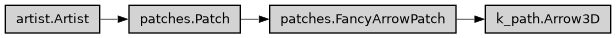

Arrow3D
- class ase2sprkkr.gui.k_path.Arrow3D(xs, ys, zs, *args, **kwargs)[source]
Class hierarchy

Constructor
- __init__(xs, ys, zs, *args, **kwargs)[source]
Defining the arrow position and path
There are two ways to define the arrow position and path:
Start, end and connection: The typical approach is to define the start and end points of the arrow using posA and posB. The curve between these two can further be configured using connectionstyle.
If given, the arrow curve is clipped by patchA and patchB, allowing it to start/end at the border of these patches. Additionally, the arrow curve can be shortened by shrinkA and shrinkB to create a margin between start/end (after possible clipping) and the drawn arrow.
path: Alternatively if path is provided, an arrow is drawn along this Path. In this case, connectionstyle, patchA, patchB, shrinkA, and shrinkB are ignored.
Styling
The arrowstyle defines the styling of the arrow head, tail and shaft. The resulting arrows can be styled further by setting the .Patch properties such as linewidth, color, facecolor, edgecolor etc. via keyword arguments.
- Parameters:
posA ((float, float), optional) –
(x, y) coordinates of start and end point of the arrow. The actually drawn start and end positions may be modified through patchA, patchB, shrinkA, and shrinkB.
posA, posB are exclusive of path.
posB ((float, float), optional) –
(x, y) coordinates of start and end point of the arrow. The actually drawn start and end positions may be modified through patchA, patchB, shrinkA, and shrinkB.
posA, posB are exclusive of path.
path (~matplotlib.path.Path, optional) –
If provided, an arrow is drawn along this path and patchA, patchB, shrinkA, and shrinkB are ignored.
path is exclusive of posA, posB.
arrowstyle –
The styling of arrow head, tail and shaft. This can be
.ArrowStyle or one of its subclasses
The shorthand string name (e.g. “->”) as given in the table below, optionally containing a comma-separated list of style parameters, e.g. “->, head_length=10, head_width=5”.
The style parameters are scaled by mutation_scale.
The following arrow styles are available. See also /gallery/text_labels_and_annotations/fancyarrow_demo.
- connectionstylestr or .ConnectionStyle or None, optional, default: ‘arc3’
.ConnectionStyle with which posA and posB are connected. This can be
.ConnectionStyle or one of its subclasses
The shorthand string name as given in the table below, e.g. “arc3”.
Class
Name
Parameters
Arc3
arc3rad=0.0
Angle3
angle3angleA=90, angleB=0
Angle
angleangleA=90, angleB=0, rad=0.0
Arc
arcangleA=0, angleB=0, armA=None, armB=None, rad=0.0
Bar
bararmA=0.0, armB=0.0, fraction=0.3, angle=None
Ignored if path is provided.
- patchA, patchB~matplotlib.patches.Patch, default: None
Optional Patches at posA and posB, respectively. If given, the arrow path is clipped by these patches such that head and tail are at the border of the patches.
Ignored if path is provided.
- shrinkA, shrinkBfloat, default: 2
Shorten the arrow path at posA and posB by this amount in points. This allows to add a margin between the intended start/end points and the arrow.
Ignored if path is provided.
- mutation_scalefloat, default: 1
Value with which attributes of arrowstyle (e.g., head_length) will be scaled.
- mutation_aspectNone or float, default: None
The height of the rectangle will be squeezed by this value before the mutation and the mutated box will be stretched by the inverse of it.
- Parameters:
**kwargs (~matplotlib.patches.Patch properties, optional) – Here is a list of available .Patch properties:
Properties –
agg_filter: a filter function, which takes a (m, n, 3) float array and a dpi value, and returns a (m, n, 3) array and two offsets from the bottom left corner of the image alpha: unknown animated: bool antialiased or aa: bool or None capstyle: .CapStyle or {‘butt’, ‘projecting’, ‘round’} clip_box: ~matplotlib.transforms.BboxBase or None clip_on: bool clip_path: Patch or (Path, Transform) or None color: color edgecolor or ec: color or None facecolor or fc: color or None figure: ~matplotlib.figure.Figure or ~matplotlib.figure.SubFigure fill: bool gid: str hatch: {‘/’, ‘\’, ‘|’, ‘-’, ‘+’, ‘x’, ‘o’, ‘O’, ‘.’, ‘*’} hatch_linewidth: unknown in_layout: bool joinstyle: .JoinStyle or {‘miter’, ‘round’, ‘bevel’} label: object linestyle or ls: {‘-’, ‘–’, ‘-.’, ‘:’, ‘’, (offset, on-off-seq), …} linewidth or lw: float or None mouseover: bool path_effects: list of .AbstractPathEffect picker: None or bool or float or callable rasterized: bool sketch_params: (scale: float, length: float, randomness: float) snap: bool or None transform: ~matplotlib.transforms.Transform url: str visible: bool zorder: float
In contrast to other patches, the default
capstyleandjoinstylefor FancyArrowPatch are set to"round".
- draw(renderer)[source]
Draw the Artist (and its children) using the given renderer.
This has no effect if the artist is not visible (.Artist.get_visible returns False).
- Parameters:
renderer (~matplotlib.backend_bases.RendererBase subclass.)
Notes
This method is overridden in the Artist subclasses.
- set(*, agg_filter=<UNSET>, alpha=<UNSET>, animated=<UNSET>, antialiased=<UNSET>, arrowstyle=<UNSET>, capstyle=<UNSET>, clip_box=<UNSET>, clip_on=<UNSET>, clip_path=<UNSET>, color=<UNSET>, connectionstyle=<UNSET>, edgecolor=<UNSET>, facecolor=<UNSET>, fill=<UNSET>, gid=<UNSET>, hatch=<UNSET>, hatch_linewidth=<UNSET>, in_layout=<UNSET>, joinstyle=<UNSET>, label=<UNSET>, linestyle=<UNSET>, linewidth=<UNSET>, mouseover=<UNSET>, mutation_aspect=<UNSET>, mutation_scale=<UNSET>, patchA=<UNSET>, patchB=<UNSET>, path_effects=<UNSET>, picker=<UNSET>, positions=<UNSET>, rasterized=<UNSET>, sketch_params=<UNSET>, snap=<UNSET>, transform=<UNSET>, url=<UNSET>, visible=<UNSET>, zorder=<UNSET>)
Set multiple properties at once.
Supported properties are
- Properties:
agg_filter: a filter function, which takes a (m, n, 3) float array and a dpi value, and returns a (m, n, 3) array and two offsets from the bottom left corner of the image alpha: float or None animated: bool antialiased or aa: bool or None arrowstyle: [ ‘-’ | ‘<-’ | ‘->’ | ‘<->’ | ‘<|-' | '-|>’ | ‘<|-|>’ | ‘]-’ | ‘-[’ | ‘]-[’ | ‘|-|’ | ‘]->’ | ‘<-[’ | ‘simple’ | ‘fancy’ | ‘wedge’ ] capstyle: .CapStyle or {‘butt’, ‘projecting’, ‘round’} clip_box: ~matplotlib.transforms.BboxBase or None clip_on: bool clip_path: Patch or (Path, Transform) or None color: color connectionstyle: [ ‘arc3’ | ‘angle3’ | ‘angle’ | ‘arc’ | ‘bar’ ] edgecolor or ec: color or None facecolor or fc: color or None figure: ~matplotlib.figure.Figure or ~matplotlib.figure.SubFigure fill: bool gid: str hatch: {‘/’, ‘\’, ‘|’, ‘-’, ‘+’, ‘x’, ‘o’, ‘O’, ‘.’, ‘*’} hatch_linewidth: unknown in_layout: bool joinstyle: .JoinStyle or {‘miter’, ‘round’, ‘bevel’} label: object linestyle or ls: {‘-’, ‘–’, ‘-.’, ‘:’, ‘’, (offset, on-off-seq), …} linewidth or lw: float or None mouseover: bool mutation_aspect: float mutation_scale: float patchA: .patches.Patch patchB: .patches.Patch path_effects: list of .AbstractPathEffect picker: None or bool or float or callable positions: unknown rasterized: bool sketch_params: (scale: float, length: float, randomness: float) snap: bool or None transform: ~matplotlib.transforms.Transform url: str visible: bool zorder: float